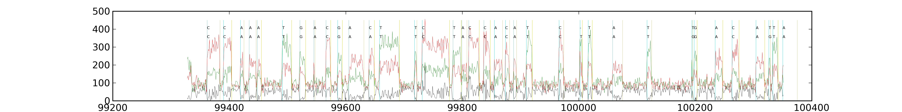
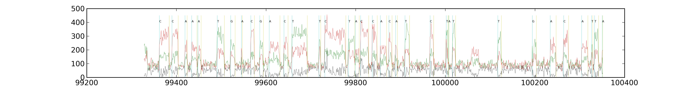

<pre>

goal: label every frame of a trace correctly

- basecaller take trace, model and output basecalls, start, width,
confidence

- tracelabeler takes trace, model, reference, approxAlign and output
refBases, start, width, confidence.

the tracelabeler is the basecaller HMM "unrolled" using the reference
with the approxAlign used to limit the computation in the dynamic
program.

Note you can do baum-welsch like parameter estimates by running em. Or
simply tabulate statistics from which the model parameters are set viz
(P(base=A, pw=2).

================================

README_sequel-squash.html showed that killing single-frame A,G bases
increases accuracy. These statistics should be apparent if we had
correctly labeled traces.

Let's concentrate on a read from that all4mer dataset.

dat = read.table("/home/UNIXHOME/mbrown/mbrown/workspace2016Q1/sequel-squash/align.pw.lt-2-fb-A,G-.rt.subreads.all4mer44.cmp.h5.error", head=T, sep="\t")

dat$key = gsub("/[0-9_]+$","",dat$query_id)

dat[dat$key == "m54004_151201_015904/11141522",]
                                     query_id      err numerr rlen
730 m54004_151201_015904/11141522/10254_10555 0.205980     62  301
731 m54004_151201_015904/11141522/10622_10907 0.168421     48  285
732 m54004_151201_015904/11141522/10960_11260 0.166667     50  300
733   m54004_151201_015904/11141522/1116_1425 0.148867     46  309
734 m54004_151201_015904/11141522/11318_11616 0.187919     56  298
735 m54004_151201_015904/11141522/12040_12240 0.220000     44  200
736 m54004_151201_015904/11141522/12417_13038 0.257649    160  621
737 m54004_151201_015904/11141522/13129_13431 0.145695     44  302
738 m54004_151201_015904/11141522/13489_13798 0.168285     52  309
739 m54004_151201_015904/11141522/13853_14159 0.137255     42  306
740 m54004_151201_015904/11141522/14216_14515 0.133779     40  299
741 m54004_151201_015904/11141522/14564_14866 0.185430     56  302
742   m54004_151201_015904/11141522/1480_1757 0.151625     42  277
743 m54004_151201_015904/11141522/14917_15222 0.137705     42  305
744 m54004_151201_015904/11141522/15273_15581 0.162338     50  308
745 m54004_151201_015904/11141522/15648_15931 0.151943     43  283
746 m54004_151201_015904/11141522/15988_16276 0.138889     40  288
747 m54004_151201_015904/11141522/16690_16854 0.189024     31  164
748   m54004_151201_015904/11141522/1822_2132 0.164516     51  310
749   m54004_151201_015904/11141522/2192_2491 0.107023     32  299
750   m54004_151201_015904/11141522/2552_2855 0.128713     39  303
751   m54004_151201_015904/11141522/2914_3221 0.123779     38  307
752   m54004_151201_015904/11141522/3273_4631 0.275405    374 1358
753     m54004_151201_015904/11141522/414_706 0.236301     69  292
754      m54004_151201_015904/11141522/51_340 0.231834     67  289
755   m54004_151201_015904/11141522/5085_5721 0.261006    166  636
756   m54004_151201_015904/11141522/5788_6095 0.172638     53  307
757   m54004_151201_015904/11141522/6165_6462 0.195286     58  297
758   m54004_151201_015904/11141522/6535_6852 0.249211     79  317
759   m54004_151201_015904/11141522/6938_7581 0.211509    136  643
760    m54004_151201_015904/11141522/764_1063 0.183946     55  299
761   m54004_151201_015904/11141522/7653_7957 0.184211     56  304
762   m54004_151201_015904/11141522/8026_8328 0.172185     52  302
763   m54004_151201_015904/11141522/8385_8717 0.222892     74  332
764   m54004_151201_015904/11141522/8780_9068 0.138889     40  288
765   m54004_151201_015904/11141522/9126_9455 0.209726     69  329
766   m54004_151201_015904/11141522/9525_9823 0.211409     63  298
767  m54004_151201_015904/11141522/9982_10176 0.144330     28  194

Pretty long read with varying accuracies...

================================

Let's start with Austin's sim data for something more manageable.

The RT pipeline misassigns the ZMW hole numbers for this sim data,
let's just use the first one.

Get: 
- trace dump
- HMM model parameters from C++ code
- DME from dmedump
- base startTime and pulseWidth from internal bam (base->trace)
- alignment to reference from pbalign bam (base->ref errors)

Break trace into 1k blocks?
Use bam info to constrain compuation.
Use HMM+DME to compute probabilities refseq->trace
Output refBase->start,+width

================================

Austin recalls the bases from underneath me so move here (caused unnecessary confusion!)

cp /pbi/dept/primary/traceSim/Sequel/RTvsOfflinePipeline/LVP1+releaseChemistryTestSet/Results_RTPv3p0p16/TestSet_004_rs200.subreads.bam ./
cp /pbi/dept/primary/traceSim/Sequel/RTvsOfflinePipeline/LVP1+releaseChemistryTestSet/Results_RTPv3p0p16/TestSet_004_rs200.dme-dump.h5 ./

pbalign --verbose --maxHits 1 --nproc 16 \
TestSet_004_rs200.subreads.bam \
/home/UNIXHOME/mbrown/mbrown/workspace2016Q1/dmesim/TestSet_004_rs200_32x.fasta \
current-TestSet_004_rs200_32x.pbalign.bam

================================

import tracelabeler

tl = tracelabeler.tracelabeler( trace="tracefile", dme="dmefile", unbam="unalignedbamfile", albam="alignedbamfile")

tl.setzmw(141265)

tl.setwindow(128)

tl.label()

================================

Sim data here /home/UNIXHOME/mbrown/mbrown/workspace2016Q1/dmesim/README_dmesim-tracesim.html

module add smrtanalysis/3.0.3


import tracelabeler

tl = tracelabeler.tracelabeler( trace="/pbi/dept/primary/traceSim/Sequel/RTvsOfflinePipeline/LVP1+releaseChemistryTestSet/TestSet_004_rs200.trc.h5", \
dme="/home/UNIXHOME/mbrown/mbrown/workspace2016Q1/sequel-tracelabeler/Results_RTPv3p0p16/TestSet_004_rs200.dme-dump.h5", \
unbam="/home/UNIXHOME/mbrown/mbrown/workspace2016Q1/sequel-tracelabeler/LVP1+releaseChemistryTestSet/Results_RTPv3p0p16/TestSet_004_rs200.subreads.bam", \
albam="/home/UNIXHOME/mbrown/mbrown/workspace2016Q1/sequel-tracelabeler/current-TestSet_004_rs200_32x.pbalign.bam", \
ref="/home/UNIXHOME/mbrown/mbrown/workspace2016Q1/dmesim/TestSet_004_rs200_32x.fasta")

# the first zmw is 2097184 in this sim data
tl.setzmw(2097184)

#trace got data
#dme got data
#unbam got mRefarmedData/2097184/0_3455
#albam got hit rlen=3329 err=0.117152 tid=refrc qid=mRefarmedData/2097184/122_3451

ac = tl.alignCorresp()




